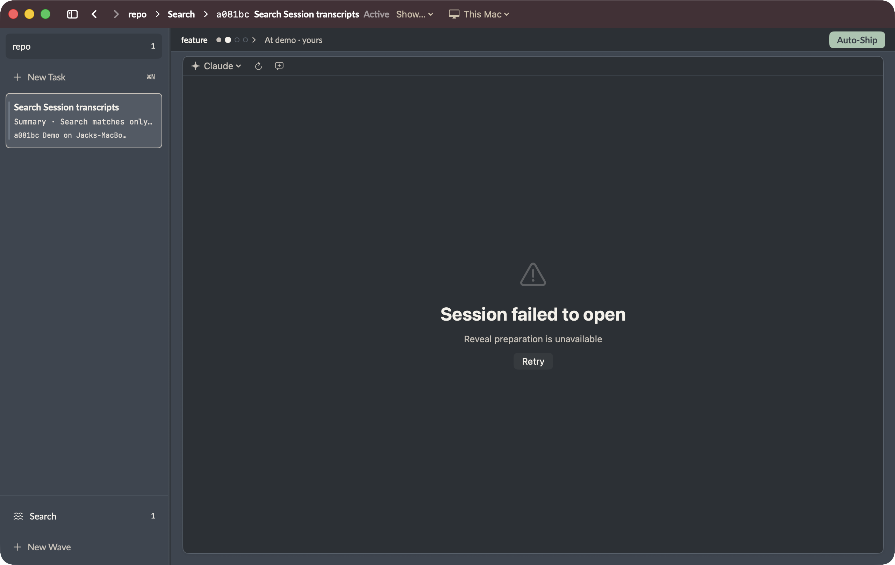

November 14, 2026. The branch's Desktop ran as a separately signed bundle
(com.loopflow.mac.qa907) with its bundled lf serving a private
lf-world one-task Machine. It was driven through
lf desktop send / send-key / capture / do / state. The shared Dev app was in use by
another worktree's QA, so it was left alone.
| Scenario | Before QA fixes | After |
|---|---|---|
| Kill Desktop (SIGKILL) with the Task open, relaunch | Pane: “Session failed to open · Reveal preparation is unavailable” over a running provider | Reopens onto the same conversation, usable |
| Unsent draft across the crash | — | qa-draft still on the line; completed with +marker3, one reply |
| Refresh session | Same reveal failure (Refresh also prepares with reveal) | New surface, marker4/marker5/marker6 each delivered once |
Terminal lf session resume takes the conversation, then Take back |
Desktop pane failed; Take back did nothing for 60 s |
Terminal prints “This conversation moved to Desktop”; pane usable; after-takeback once; Desktop text sent while displaced never reached the provider |
| Provider identity | One stand-in provider process (PID 10926) and one thread
(573a74c1…) through three Desktop kills, two Refreshes and a takeover | |
reveal. Since #1887 a held Task conversation listed
only open. Desktop restores panes and refreshes with reveal intent and fails a
reveal preparation without a reveal action. held_actions
(rust/loopflow/src/ops/human_session.rs) now lists both. Prepare output before and after:
before: detached [('open', None)]
after: detached [('open', None), ('reveal', None)]
Regression: a_held_task_conversation_without_a_view_offers_attach (passes).ended while the store item stays
.live, so moveHere → prepare returned early. SessionsStore.moveHere now
releases a failed attachment and waits for it to retire. Regression
WarmPaneMountTests/takeBackReplacesEndedViewer fails three expectations without the change and passes with it.First launch, after the first Desktop kill, before fix 1:

After the fixes, the third relaunch, then a pane capture:
reply 573a74c1-…: probe-crash qa-draft +marker3 reply 573a74c1-…: qa-draft +marker3
Takeover run with both fixes:
terminal viewer attached; desktop pane: [(None, 'failed')]
intrusion reached provider: False
take back: 0
after take back pane: [('97c77526-…', 'usable')] terminal: "This conversation moved to Desktop: lf resume session_7e35…"
after-takeback replies: 1 draft intrusion replies: 0
Pane-process walkthrough (PTY running Desktop's open_argv): clean exit and SIGKILL reopen both
delivered the next line once. Text typed before the viewer attaches is echoed by the local tty and lost.
Desktop doesn't send input at that point because it gates input on native readiness. Attach took 8–21 s at load average ~244.
screencapture returned “could not create image” for every window and
region (display asleep or locked). Later states come from lf desktop state and pane captures.desktop send inserts at the surface without going through first-responder.claude echoes lines.main thread hung ms=65076 on the first Task open and ms=61443 on one
Refresh, at load average 160–240 with a debug build. A repeat Refresh, sampled for 25 s, didn't hang.
This needs follow-up under LOO-911.failed) instead of
staying read-only with Take back, which is what the plan's demo describes. Take back and Refresh both recover the pane.
Whether displacement is the intended behavior is a product decision.cargo clippy --all-targets and the broader suites. The two focused regressions above were the only tests run here.